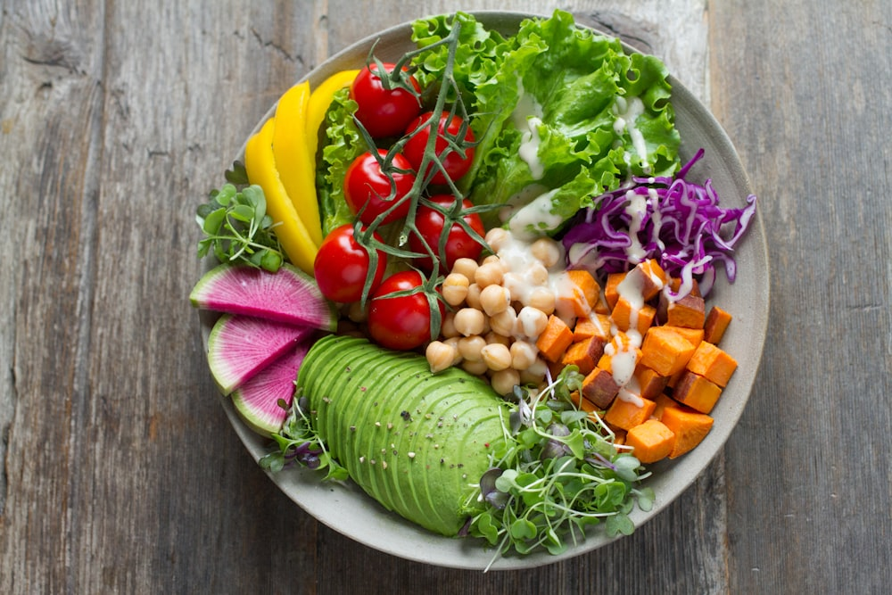

야미덱스 YummyDex
미식가들의 맛 표현 인덱스
danielk0121
v-260314-2140
🥗

아보카도와 드레싱의 조화가 너무 부드러워요. 채소는 좀 숨이 죽어 신선도가 아쉽지만, 드레싱 맛이 좋아서 계속 먹게 되네요.
📍 연남동 샐러드 카페
입맛 싱크로율
87%


🥗
건강러🇰🇷
여기 아보카도 진짜 잘 익었네요! 드레싱 어떤 거 쓰나요?
1시간 전
🥬
샐러드매니아🇰🇷
채소 신선도가 여기까지 느껴져요. 연남동 가면 꼭 가볼게요!
45분 전
🧘
요기니🇯🇵
운동 끝나고 먹기 딱 좋은 구성이네요. 정보 감사합니다 :)
30분 전
🥑
다이어트중🇺🇸
입맛 매칭 87%라니... 믿고 먹으러 갑니다!
10분 전
🥦
댓글 2개 더 보기
식단러🇰🇷
여기 양도 꽤 많아서 한 끼 식사로 든든하더라구요 ㅎㅎ
방금
🍔
패티의 육즙과 녹아내린 치즈의 밸런스가 환상적이에요. 번도 구워져서 고소함이 두 배!
📍 이태원 버거 하우스
입맛 싱크로율
72%


🍔
버거덕후🇰🇷
여기 패티 굽기 조절 가능한가요? 비주얼 대박이네요
4시간 전
🥩
육즙사랑🇺🇸
한 입 베어물면 육즙 팡 터질 것 같아요... 츄릅
3시간 전
🧀
치즈빌런🇫🇷
치즈 흘러내리는 거 보소... 이건 반칙이죠!
2시간 전
🏘️
이태원주민🇰🇷
여기 주말엔 웨이팅 좀 있는데 평일 낮엔 갈만해요!
1시간 전
🚐
수제버거투어🇰🇷
전국 버거 지도 만드는 중인데 여기 리스트에 올려야겠네요 ㅋㅋ
30분 전
💪
댓글 4개 더 보기
헬스보이🇰🇷
치팅데이 메뉴로 완벽합니다. 단백질 보충 가야죠!
10분 전
🍝
면의 삶기가 완벽해요. 알덴테의 정석! 다만 성인 남성이 먹기엔 양이 조금 적은 편이라 사이드 메뉴 추가를 추천해요.
📍 한남동 이탈리안 키친
⚠️ 입맛이 58% 다른 유저의 맛 표현이에요


🍷
와인러버🇰🇷
여기 파스타 진짜 생면 쓰나요? 소스가 잘 배어있네요
어제
🍝
면덕후🇮🇹
한남동에서 파스타 실패하기 쉬운데 여긴 믿고 가도 되겠어요!
20시간 전
✨
분위기파🇰🇷
여기 조명도 예뻐서 데이트 코스로 딱일 것 같아요 ㅎㅎ
15시간 전
🇮🇹
댓글 1개 더 보기
알덴테성애자🇰🇷
면 익힘 정도 보니까 딱 제 스타일이네요. 당장 예약합니다!
10시간 전
🍷
와인러버🇰🇷
여기 파스타 진짜 생면 쓰나요? 소스가 잘 배어있네요
어제
🍝
면덕후🇮🇹
한남동에서 파스타 실패하기 쉬운데 여긴 믿고 가도 되겠어요!
20시간 전
✨
분위기파🇰🇷
여기 조명도 예뻐서 데이트 코스로 딱일 것 같아요 ㅎㅎ
15시간 전
🇮🇹
댓글 1개 더 보기
알덴테성애자🇰🇷
면 익힘 정도 보니까 딱 제 스타일이네요. 당장 예약합니다!
10시간 전